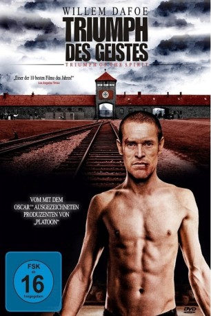

#10052 Triumph des Geistes
 
 IMDB-Wertung: 6.9 / 10
IMDB-Wertung: 6.9 / 10  Metascore: 0
Metascore: 0 
Während des Zweiten Weltkriegs wird der griechische Olympia-Boxer Salamo Arouch mit seiner Familie von den Nazis in das KZ Auschwitz-Birkenau deportiert. Als die Aufseher seine Fähigkeiten als Boxer erkennen, zwingt man ihn zu 'Schaukämpfen' zur Unterhaltung des Lagerpersonals. Gewinnt Arouch, dürfen er und seine Angehörigen weiterleben, während der jeweilige Verlierer umgebracht wird. Also kämpft Arouch mit eisernem Überlebenswillen, während das Ende des Krieges langsam näher rückt…
Jahr: 1989
Dauer: 115 Minuten
FSK: 16
Land: USA Studio: Triumph Releasing CorporationTonspuren: DD2.0 - ,
Untertitel:
Auflösung: 1080p (1920x1040) Größe: 8407 MB
Genre: Drama, Krieg, Sport, Geschichte, Biographie
Regisseur: Robert M. Young
Drehbuch: Shimon Arama, Zion Haen, Andrzej Krakowski, Laurence Heath
Soundtrack: Cliff Eidelman
Darsteller:
 Willem Dafoe als Salamo Arouch
Willem Dafoe als Salamo Arouch Edward James Olmos als Gypsy
Edward James Olmos als Gypsy Robert Loggia als Father Arouch
Robert Loggia als Father Arouch Costas Mandylor als Avram Arouch
Costas Mandylor als Avram Arouch- Kario Salem als Jacko
- Edward Zentara als Janush
- Hartmut Becker als Maj. Rauscher
- Zofia Saretok als Momma
- Grazyna Krukówna als Sister Julie
- Jerzy Gralek als Kapo Kyr
- Ewa Lesniak als Kapo Hilda
- Marek Frackowiak als SS Officer
 Adolf Hitler als Himself (archive footage)
Adolf Hitler als Himself (archive footage)- Michal Juszczakiewicz als Sonderkommando
- Roman Klosowski als Officer SS
- Bernard Krawczyk als SS officer
- Maria Probosz als Rauscher's girlfriend
- Lew Rywin als Announce
- Wendy Gazelle als Allegra
- Kelly Wolf als Elena
- Burkhard Heyl als Aide to Rauscher
- Karolina Twardowska als Bemmi
- Juranda Krol als Sarah
- Wiktor Mlynarczyk als Beppo
- Jack Messinger als Greek prisoner
- Tuvia Tavi als Greek prisoner
- Danny Segev als Greek prisoner
- Avi Keidar als Greek prisoner
- Andrzej Wojaczek als Kapo Otto
- Sebastian Spandel als Lua
- Anna Chitro als Naomi
- Halina Chrobak als Clog Thise
- Ireneusz Tomczak als Fratelli
- Teddy Atlas als Silber
- Krzysztof Bauman als Prisoner
- Dorota Bialy-Wieczorek als SS woman
- Andrzej Bryg als Officer SS
- Mieczyslaw Budzynski als Boxer
- Arthur Coburn als Rabbi
- Andrzej Dopierala als SS Officer
- Zofia Jaronczyk als
- Evan Kopelson als Boxer
- Edward Kusztal als SS officer
- Joseph Lis als Boxer
- Tomasz Lulek als Prisoner
- Anna Nowak als Prisoner
- Hanna Pater als Prisoner nurse
- Irena Romanska als
- Edward Skarga als Prisoner
- Marek Slosarski als Grek
Datei: X:\1989\Triumph des Geistes (1989, FSK16, 1920x1040).mkv seit 21.11.2018
Festplatte: HD 1987-1991
 Es gibt insgesamt 54 Filme in der Gruppe '1989'
Es gibt insgesamt 54 Filme in der Gruppe '1989'